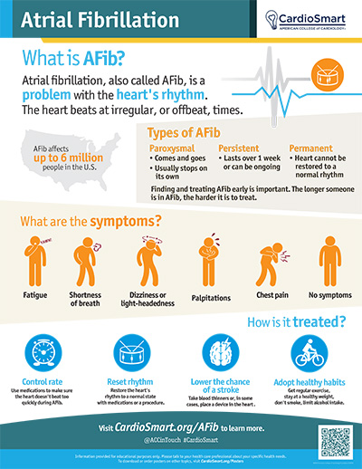

What Is Atrial Fibrillation (AFib)?
Atrial fibrillation is the most common abnormal heart rhythm in adults. Instead of a steady, organized heartbeat, the upper chambers of the heart (the atria) quiver rapidly and irregularly. It is not immediately life–threatening on its own, but it needs attention because it raises the risk of stroke and because it can make the heart work harder than it should.
What Is Happening in the Heart
A normal heartbeat starts in a small group of cells at the top of the heart called the sinus node — the heart's natural pacemaker. It sends an electrical signal that spreads smoothly through the atria, then down to the lower chambers (the ventricles), which do the main pumping.
In AFib, chaotic electrical signals fire in the atria instead of a single organized one. The atria quiver (fibrillate) rather than contract properly, and the electrical signal reaches the ventricles at irregular, often rapid, intervals. The result is an irregular and sometimes fast heartbeat. Because the atria don't empty well, blood can pool and form clots — which is the danger behind the increased stroke risk.

Symptoms
Some people feel every beat and know something is wrong; others have no symptoms at all and learn they have AFib only when a doctor finds it on a routine check. Symptoms can come and go. They may include:
- A racing, fluttering, or "skipping" heartbeat (palpitations)
- Shortness of breath, especially with activity
- Fatigue or feeling unusually tired
- Dizziness or lightheadedness
- Chest discomfort or pressure
- Difficulty with exercise that used to be easy
If the heart beats too fast for too long, it can weaken over time — a condition called tachycardia–induced cardiomyopathy. Treating the rhythm usually helps the heart recover.
Types of AFib
| Type | What it means |
|---|---|
| Paroxysmal | Comes and goes; episodes stop on their own within about a week. |
| Persistent | Lasts longer than a week and usually needs treatment to stop it. |
| Long-standing persistent | Continuous for a year or more. |
| Permanent | Accepted as ongoing; the focus is on rate control and stroke prevention rather than restoring normal rhythm. |
Who Gets It and Why
AFib becomes more common with age, but many factors increase the chance of developing it:
- High blood pressure — the most common driver; it stretches and stiffens the atria over time.
- Aging of the heart's electrical tissue.
- Heart disease — coronary artery disease, heart valve problems, heart failure, or a prior heart attack.
- Sleep apnea — untreated, it is a common hidden cause.
- Alcohol — heavy drinking, and even "binge" drinking on holidays, can trigger episodes.
- Obesity and weight gain.
- Thyroid disease — especially an overactive thyroid.
- Diabetes.
- Genetics and family history.
Sometimes no cause is found. Many of these risk factors are reversible — controlling weight, blood pressure, sleep apnea, and alcohol can reduce the burden of AFib.
Why AFib Raises Stroke Risk
When the atria don't contract fully, blood can pool and clot — most often in a small pocket of the left atrium called the left atrial appendage. If a clot breaks loose and travels to the brain, it causes a stroke. AFib roughly raises the risk of stroke fivefold, and strokes related to AFib tend to be more severe.
The good news: this risk is very preventable. Whether you need a blood thinner depends on your overall stroke risk, which your doctor estimates using factors such as your age, whether you have high blood pressure, diabetes, heart failure, or a prior stroke. The decision to use an anticoagulant ("blood thinner") is based on your overall risk, not on how you feel — many people with no symptoms still benefit greatly.
How It Is Diagnosed
- Pulse check and ECG: an ECG (electrocardiogram) taken during an episode usually gives the answer.
- Routine ECGs even when you feel fine, because AFib can be silent.
- Home rhythm monitoring: a smartphone app (with a doctor's guidance), a portable event monitor, or a patch you wear for days to a few weeks to catch episodes that come and go.
- Echocardiogram (ultrasound): checks the size and function of the chambers and looks for valve problems. An ultrasound of the heart from inside the esophagus (a transesophageal echo, or TEE) is sometimes used to check for clots before a procedure to restore rhythm.
- Blood tests: to look for thyroid problems, electrolyte issues, and other drivers.
Because episodes can be brief and unpredictable, the diagnosis sometimes takes a little persistence — wearing a monitor is often the key step.
How It Is Treated
Treatment has three goals, and most plans address all three:
1. Prevent stroke (almost always)
Based on your stroke risk score, your doctor may recommend an oral anticoagulant (“blood thinner”), most often a DOAC such as apixaban, rivaroxaban, or edoxaban, or warfarin. These dramatically reduce the risk of stroke. Aspirin is not an adequate substitute in most people with AFib. The choice is made carefully with you, weighing stroke risk against bleeding risk.
2. Control the heart rate
If the heart is beating too fast, medications such as beta-blockers or calcium channel blockers slow it down so it doesn't exhaust the heart. For many people, especially those who feel fine, good rate control is enough.
3. Restore and maintain a normal rhythm
For people whose symptoms bother them, the goal is a steady rhythm. Options include:
- Anti-arrhythmic medications to keep the heart in normal rhythm.
- Electrical cardioversion: a brief, controlled shock under sedation that resets the rhythm.
- Catheter ablation: a procedure where a doctor finds and isolates the abnormal electrical spots — usually where the pulmonary veins enter the left atrium — and burns or freezes them, walling off the source of the abnormal signals.
- AFib surgery (the “maze” procedure) in selected cases, often combined with other heart surgery.
Address the causes
Treating the underlying drivers — weight loss, blood pressure control, treating sleep apnea, and cutting alcohol — is often the most powerful single step and can reduce or even eliminate episodes.
When to seek urgent care
Call 911 if you have chest pain, severe shortness of breath, fainting, or new weakness or numbness on one side of your body, trouble speaking, or sudden vision changes — these can signal a heart emergency or a stroke. Symptoms of stroke can be remembered with BE FAST: Balance, Eyes, Face, Arms, Speech, and Time to call 911.
Key Takeaways
- AFib is a common irregular heart rhythm — sometimes it causes no symptoms at all.
- Its greatest danger is a higher risk of stroke, which blood thinners effectively reduce.
- Treatment combines stroke prevention, heart rate control, and often restoring normal rhythm.
- Fixing the underlying causes (weight, blood pressure, sleep apnea, alcohol) can dramatically help.
Reliable Sources
- CardioSmart (American College of Cardiology), Atrial Fibrillation — infographic
- American Heart Association, About Atrial Fibrillation
- 2023 ACC/AHA/ACCP/HRS Guideline for the Diagnosis and Management of Atrial Fibrillation (basis of the types and treatment sections above)
This page is for general education only and does not replace advice from your doctor. If you have questions about palpitations, an irregular heartbeat, or your own stroke risk, please contact the office.